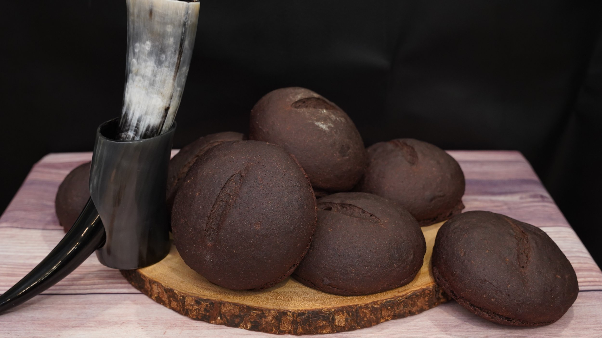

Viking Blood Bread, or blodbrød as it was known in Old Norse, was more than just sustenance for the Norsemen—it was a symbol of resilience and survival. Vikings lived in harsh climates, where resources were often scarce, especially during the long Scandinavian winters. Utilizing every part of the animal was not just practical but necessary for survival. Blood, in particular, was considered highly valuable for its rich nutrients, and by combining it with rye flour and other available ingredients, the Vikings created a dense and nutritious bread that could sustain them on long voyages and during times of limited food supply.
The use of blood in cooking wasn't unique to the Vikings, but their adaptation of it into bread speaks to their resourcefulness and connection to the land. Blood bread was often made after large hunting or slaughtering events, where no part of the animal was wasted. For the Vikings, food wasn’t just about survival—it was about honoring the animal that gave its life. In fact, some Viking traditions held that consuming the blood of an animal allowed one to absorb its strength and vitality. Bread made with blood became an essential source of nourishment during their sea-faring expeditions, giving Viking warriors the energy needed for both trade and conquest.
Beyond practicality, blodbrød also played a role in Viking rituals and gatherings. It was commonly prepared during special feasts that honored the gods, particularly Odin, who was associated with war, wisdom, and death. Blood was seen as a powerful offering, and dishes made from blood were thought to please the gods and ancestors. In a way, blood bread bridged the gap between the mortal and divine, nourishing both the body and the spirit. The consumption of this hearty bread was a communal act, reflecting the Vikings’ deep sense of camaraderie and shared purpose, whether in times of battle or peace.